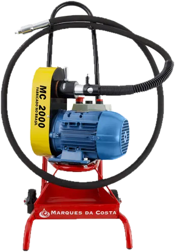

Equipamentos / MC 2000
MC 2000
Base móvel inclusa e eixo de até 30 metros: leva a limpeza até a caldeira, sem desmontar nada. Ideal com escova de aço.
Motor para limpeza de caldeiras
Caldeiras industriaisTubulações longasManutenção preventiva
Rotação de 2.000 rpm, pensada para a limpeza de tubos de caldeiras industriais e para a manutenção preventiva de trocadores de calor.
Com eixo flexível de até 30 metros, alcança tubulações longas sem precisar mover o equipamento a cada tubo.
- Eixo flexívelde série
- Canetade série
- Base móvelde série
- Roseta, escova e demais acessóriosvendidos à parte
Disponível na matriz, nas filiais e nas revendas autorizadas.

MC 2000 · Fabricado em Marília/SPFicha técnica
| Motor | Trifásico 3 CV |
| Tensão | 220 / 380 / 440 V — 60 Hz |
| Rotação | 2.000 rpm |
| Eixo flexível | Ø 19, 25, 30 ou 34 mm |
| Alma de aço | 3/8", 1/2" ou 5/8" |
| Caneta | 19, 25, 30 mm, 1/2", 2" ou 3" |
| Rosetas | Aço carbono, bronze ou nylon |
| Comprimento do eixo | 5 a 30 m — sob medida |
| Mobilidade | Base móvel inclusa |
| Acessório indicado | Escova de aço e roseta |
Orçamento certo
na primeira conversa.
Com estas cinco respostas a equipe técnica indica o eixo, a caneta e a ferramenta certos para o seu tubo.
- 1Qual a medida interna do tubo?Diâmetro externo menos duas vezes a parede.
- 2Qual o comprimento do tubo?Define o comprimento do eixo flexível.
- 3Qual a tensão disponível no local?220, 380 ou 440 V.
- 4O tubo é liso ou corrugado por dentro?Corrugado pede escova; liso aceita roseta.
- 5O tubo é reto ou tem curvas?Curvas pedem junta universal ou eixo flexível.